General
We thank you for purchasing our theme. Hope our theme will be of great help for you to succeed. We appreciate your decision to read the manual before request for our support.
Elementor and WPBakery are two completely different versions. So cannot use both Elementor and WPBakery at the same time. You need to remove one of the two plugins.
GreenMart – Organic & Food WooCommerce WordPress Theme
GreenMart is a Organic & Food WooCommerce WordPress Theme that is flexible and customizable for setting and changing any elements wihtin a minutes via Powerful Theme Options, you also can customize Google fonts without code very easy and simple.
GreenMart can be used for various of purpose, especially built for Food & Organic Online Store. GreenMart is fully comapatible with all of SEO standard that help your business to have a high rating search on Google Search. Every page of GreenMart is fully responsive, so it can be viewed easily no matter of different screen devices like: desktop, tablet and mobile. All that make your customers have a interesting shopping experiences.
Notice this: Not all skins support both WPBakery and Elementor. Here is a list of skins:
Fresh Food & Grocery Skin - Only support Elementor
Organic & Food Skin - Supports both WPBakery and Elementor
Functional Food & Medicine Skin - Only support WPBakery
Flower Online Store Skin - Only support WPBakery
It features deep integration with WooCommerce core plus several of the most popular plugins:
- Redux Framework
- Elementor Page Builder
- WPBakery Page Builder (formerly Visual Composer)
- Slider Revolution Responsive
- WOOF - WooCommerce Products Filter
- YITH WooCommerce Wishlist
- YITH WooCompare
- YITH WooCommerce Quick View
- Contact Form 7
- MailChimp for WordPress
- WooCommerce Variation Swatches
- YITH WooCommerce Added to Cart Popup
- Photo Reviews for WooCommerce
- SVG Support
- WooCommerce Advanced Free Shipping
- YITH WooCommerce Brands Add-On
- YITH WooCommerce Frequently Bought Together
- YITH WooCommerce Questions and Answers
And Marketplace Plug-ins Compatibility:
Requirement
To install this theme you must have a working version of WordPress. Please refer to WordPress documentation for further instructions. You can download the latest version of WordPress here https://wordpress.org/download/
- WordPress 5.7 or higher
- WooCommerce 5.1 or higher
- For best performance we recommend using PHP 7.2 or higher.
- MySQL 5.6 or greater OR MariaDB 10.0 or greater
- Nginx or Apache with mod_rewrite module
- This theme is tested under Mac, Windows and Linux.
- Please install the XMLReader PHP extension on your server
If the import stalls and fails to respond after a few minutes, or it fails with a simple error message like “Import failed,” You are suffering from PHP configuration limits that are set too low to complete the process. You should contact your web host and ask them to increase those limits to a minimum as follows:
- max_execution_time 3600
- max_input_time 3600
- memory_limit 256M
- post_max_size 64M
- upload_max_filesize 64M
- max_input_vars 3000
- allow_url_fopen on (!important)
- Please install the XMLReader PHP extension on your server
Free Support
All of our items come with free support, and we have an advanced ticket system to handle your requests. Support is limited to questions regarding the theme’s features or problems with the theme. We are not able to provide support for code customizations or third-party plugins. If you need help with anything other than minor customizations of your theme, we suggest enlisting the help of a developer.
How To Receive Free Support
- Step 1 – Go to Ticket System (https://tickets.thembay.com/) and Click Submit a ticket.
- Step 2 – Provide all requires information: Product Name, Purchase Code, your username on Themeforest.net and URL to your page to verify your license.
- Step 3 – Provide more details about the problem, descibe, screenshot ...
- Step 4 – Submit ticket and wait our response (within 14-24 hours)
How to find your ThemeForest Item Purchase Code
To find your licence key/purchase code you need to log into your ThemeForest account and go to your Downloads page.
Locate some of the Themes Kingdom themes you purchased in your Downloads list and click on the Download and next on the License Certificate & purchase code link in drop-down menu.
After you have downloaded the certificate you can open it in a text editor such as Notepad and copy the Item Purchase Code.
Install Theme
Download Package from ThemeForest
After purchasing our theme, you need to go your download area, click on button Download and select download All files & documentation.
Extract Package
After download completed, you need to unzip the package and select the way you want to install the theme.
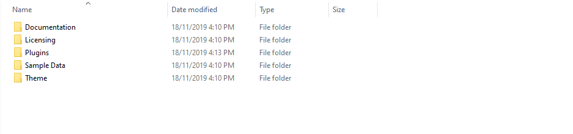Once the download is complete, unzip the file and you would see the following packages:
- Documentation - our detail documentation for the theme
- Licensing - the theme license
- Plugins - the Bundled Plugins
- Sample Data - the sample data of the demos, you can import it
- Theme - for manual installation
Installation Process
You can install GreenMart theme directly in Wordpress Admin or upload files via FTP
Theme Installation via WordPress
Please, follow the steps below to install GreenMart Theme (Make sure you had extract files).
- Step 1 – Login to your WordPress Dasrdoard.
- Step 2 – Navigate to Appearance ► Themes.
-
Step 3 – Click Add New button on top of the page.
- Step 4 – Then click Upload Theme.
-
Step 5 – Next, Browse to the zip file and click Install now for the theme to be uploaded and installed.
- Step 6 – After done installing, click Activate the theme
Theme Installation via FTP
Using an FTP software like File Zilla or CuteFTP to upload the theme files to your WordPress site.
The first, extract the theme file "greenmart.zip", you will have a folder "greenmart" include all theme files and folders (css, images, fonts...).
Please, follow the steps below to install the theme via FTP:
- Step 1 – Log into your hosting space (server) via FTP client.
- Step 2 – In extracted archive folder, find greenmart.
- Step 3 – Upload the greenmart folder to your server in path ROOT/wp-content/themes/.
- Step 4 – The uploaded path should be like this: ROOT/wp-content/themes/greenmart/.
- Step 5 – Login to your WordPress Dasrdoard and go to Appearance ► Themes and activate the GreenMart theme.
Install Plugins
Elementor and WPBakery are two completely different versions. So cannot use both Elementor and WPBakery at the same time. You need to remove one of the two plugins.
Please, follow the steps below to install required plugins:
-
Step 1 - After activating the theme, you will be asked to installed the required and recommended plugins, you can proceed by clicking on Begin installing plugins
-
Step 2 – In the next page, check all the plugins that you want to install then on the drop down Bulk Actions, choose Install then click Install, the plugin installation process will start.
-
Step 3 – Check all the plugins that you want to activate then on the drop down Bulk Actions, choose Activate and click Apply, the plugin installation process will start. Wait for all the plugin activated then you can start customizing your website as you wish
Import Sample Data - WPBakery
Elementor and WPBakery are two completely different versions. So cannot use both Elementor and WPBakery at the same time. Please remove the Elementor plugin if you want to use WPBakery.
Here are the skins that support WPBakery:
Organic & Food Skin
Functional Food & Medicine Skin
Flower Online Store Skin
Watch the video "Organic & Food Skin - Import All Sample Data - With WPBakery" tutorial full
With "One click import", customer do not import step by step data as import usual. It import all data like : Content, Widget, Revolution slider, Menu, Customize...
Requirement
To use the "One click import" function, you need to meet the following requirements:
- Active parent theme
- Uploads folder writable
- For best performance we recommend using PHP 7.2 or higher.
- MySQL 5.6 or greater OR MariaDB 10.0 or greater
- Nginx or Apache with mod_rewrite module
- HTTPS support
- Memory Limit 512M or higher
Import All Sample Data - for a new website
Step 1 - Login to your WordPress Dasrdoard.
Step 2 (Important Step) - Deactivate the plugin Elementor
Step 3 (Options) - Install the Marketplace plugin that you will be using. It will make the imported data more standard. Can be ignored if you have the plugin installed or do not need to use it
- Dokan
- WC Marketplace
- WCFM
- WC Vendors
Step 4 - Go to Appearance > Theme Setup > Click to Start
Step 5 - Install Child Theme
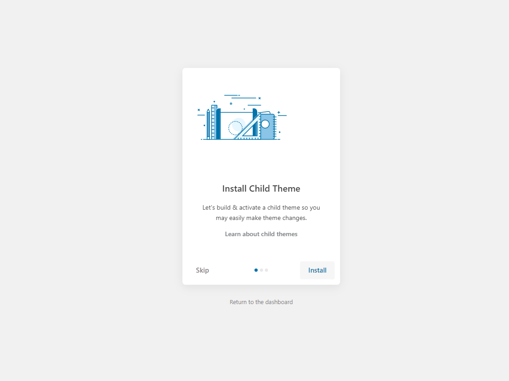Step 6 - Import Content: Select the Demo you want, then click to Import
The process may take some time. Please wait
All done. Have fun!
Step 7 - Save information all products (fix errors not showing Categories, products)
7.1 "Quick Edit" any product.

7.2 Check all categories, then click Update
Step 8 (Important Step) - Update Database WooCommerce Products , Fix error filter products not working
- Go to WooCommerce > Status > Tool > Click on parts like image below
Step 9 - Configure Mega Menu
Step 10 - Choose Footer Menu
Step 11 - Choose Cart and Checkout Page: Go to WooCommerce > Settings > Checkout > Checkout Options
Step 12 - Create Variable Products: You can read more here => https://docs.woocommerce.com/document/variable-product/
Step 13 - Choose Shop Page: Go to WooCommerce > Settings > Products > General > Shop Page
When you install the WooCommerce plugin, your website will automatically create a Shop page. Therefore, when importing GreenMart data, it will have two Shop pages. You need to delete one page.
There are 2 Shop pages here. Please delete "Shop - Shop Page"
Select Shop page again in WooCommerce settings
Watch the video "Organic & Food Skin - Import All Sample Data - With WPBakery" tutorial full
Import All Sample Data and import the configure for website available.
Watch the video "Installation Theme and Import All Sample Data for website available" tutorial
If you have a website with data available, follow these steps to use the "GreenMart" theme for your website.
Step 1 - Install and activate theme.
Step 2 - Deactivate and Delete the plugins "Urna Core", "Thembay Elementor", "Tbay Framework Pro" (If they exist in your old Theme)

Step 3 - Install and activate the required plugins.
Step 4 (Important Step) - Deactivate the plugin Elementor
Step 5 (Options) - Install the Marketplace plugin that you will be using. It will make the imported data more standard. Can be ignored if you have the plugin installed or do not need to use it
- Dokan
- WC Marketplace
- WCFM
- WC Vendors
Step 6 - Go to Appearance > Theme Setup > Click to Start
Step 7 - Install Child Theme
Step 8 - Import Content: Select the Demo you want (Uncheck the content section), then click to Import
The process may take some time. Please wait
All done. Have fun!
Step 9 - Create a Home Page with the template we provide
Get the Code here: Sample Data > wpbakery > pages > organic > home-xxx.txt
Turn Off Title Page and Breadcrumb on Homepage
Select Homepage Displays
Watch the video "Create Homepage as we provide" tutorialStep 10 - Enable WPBakery for Products, Tbay Footer, Tbay Megamenu
-
Step 11 - Create Footer with the template we provide
Get the Code here: Sample Data > wpbakery > pages > organic > footer-1.txt
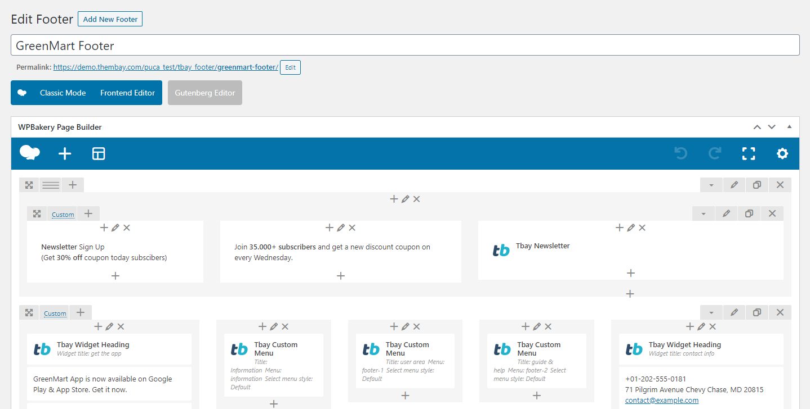Select Footer Layout in the Theme Options
Watch the video "Create Footer as we provide" tutorial Step 12 - Choose Shop Page: Go to WooCommerce > Settings > Products > General > Shop Page
Step 13 - Choose Cart and Checkout Page: Go to WooCommerce > Settings > Advanced
Step 14 - Manual Import Revolution Slider
 Watch the video "Manual Import Revolution Slider" tutorial
Watch the video "Manual Import Revolution Slider" tutorial
Step 15 - Import MailChimp form
Watch the video "Import MailChimp form" tutorial
Watch the video "Installation Theme and Import All Sample Data for website available" tutorial
Use WP Reset plugin if you want import sample data one again.
Each GreenMart's skin uses a separate data, so if you want to switch between skins you need to reset the data, then import the data again.
Use this plugin to reset the WordPress database : https://wordpress.org/plugins/wp-reset/
Step 1 - Install WP Reset plugin.
Step 2 - Reset Database
Step 3 - Configure the Theme Setup as instructed above
Error or Problem when import sample data
1. Page not found
In this case, you only need to import the data again.
3. If you have problems importing the demo ( example : infinite loading, error 505 with when using wordpress importer ) then you may have a problem with the server settings.Please check these:
1. If the import stalls and fails to respond after a few minutes, or it fails with a simple error message like “Import failed,” You are suffering from PHP configuration limits that are set too low to complete the process. You should contact your web host and ask them to increase those limits to a minimum as follows:
- max_execution_time 3600
- max_input_time 3600
- memory_limit 256M
- post_max_size 64M
- upload_max_filesize 64M
- max_input_vars 3000
- allow_url_fopen on (!important)
You can verify your PHP configuration limits by installing a simple plugin found here. And you can also check your PHP error logs to see the exact error being returned.
2. Also if possible update your PHP version to 7.0+
3. Save all config in Woocommerce before import data
After doing this you can reset your database using the WordPress Database Reset Plugin and try to re-import the demo data ( WARNING : Reset the database will make you lost all the data of your current wordpress )
If you still have problem your web host may uses process watching software that prevents bulk processing on their web servers.
If you have problem please submit a ticket and we will help you to import the demo.
Import Sample Data - Elementor
Elementor and WPBakery are two completely different versions. So cannot use both Elementor and WPBakery at the same time. Please remove the WPBakery plugin if you want to use Elementor.
Here are the skins that support Elementor:
Fresh Food & Grocery Skin
Organic & Food Skin
Watch the video "Fresh Food & Grocery Skin - Import All Sample Data - With Elementor" tutorial full
Watch the video "Organic & Food Skin - Import All Sample Data - With Elementor" tutorial full
With "One click import", customer do not import step by step data as import usual. It import all data like : Content, Widget, Revolution slider, Menu, Customize...
Requirement
To use the "One click import" function, you need to meet the following requirements:
- Active parent theme
- Uploads folder writable
- For best performance we recommend using PHP 7.2 or higher.
- MySQL 5.6 or greater OR MariaDB 10.0 or greater
- Nginx or Apache with mod_rewrite module
- HTTPS support
- Memory Limit 512M or higher
Import All Sample Data - for a new website
Step 1 - Login to your WordPress Dasrdoard.
Step 2 (Important Step) - Deactivate the plugin WPBakery

Step 3 (Options) - Install the Marketplace plugin that you will be using. It will make the imported data more standard. Can be ignored if you have the plugin installed or do not need to use it
- Dokan
- WC Marketplace
- WCFM
- WC Vendors
Step 4 - Go to Appearance > Theme Setup > Click to Start
Step 5 - Install Child Theme
Step 6 - Import Content: Select the Demo you want, then click to Import
The process may take some time. Please wait
All done. Have fun!
Step 7 - Save information all products (fix errors not showing Categories, products)
7.1 "Quick Edit" any product.
7.2 Check all categories, then click Update
Step 8 (Important Step) - Update Database WooCommerce Products , Fix error filter products not working
- Go to WooCommerce > Status > Tool > Click on parts like image below
Step 9 (Important Step) - Regenerate CSS for Elementor: Styles set in Elementor are saved in CSS files in the uploads folder. Recreate those files, according to the most recent settings.

-
Step 10 - Elementor Settings: Enable Elementor for Tbay Footer, Tbay Megamenu, Disable Default Colors, Disable Default Fonts.
Step 11 - Configure Mega Menu
Step 12 - Choose Shop Page: Go to WooCommerce > Settings > Products > General > Shop Page
When you install the WooCommerce plugin, your website will automatically create a Shop page. Therefore, when importing GreenMart data, it will have two Shop pages. You need to delete one page.
There are 2 Shop pages here. Please delete "Shop - Shop Page"
Select Shop page again in WooCommerce settings
Step 13 - Choose Cart and Checkout Page: Go to WooCommerce > Settings > Advanced
Step 14 - Create Variable Products: You can read more here => https://docs.woocommerce.com/document/variable-product/
Watch the video "Create Variable Products" tutorialStep 15 - If the newsletter form is not working. You will need to save the form
You need to open the Mailchimp form and save it
Then the form will reappear
Watch the video "Fresh Food & Grocery Skin - Import All Sample Data - With Elementor" tutorial full
Watch the video "Organic & Food Skin - Import All Sample Data - With Elementor" tutorial full
Import All Sample Data and import the configure for website available.
If you have a website with data available, follow these steps to use the "GreenMart" theme for your website.
Step 1 - Install and activate theme.
Step 2 - Deactivate and Delete the plugins "Urna Core", "Thembay Elementor", "Tbay Framework Pro" (If they exist in your old Theme)
Step 3 - Install and activate the required plugins.
Step 4 (Important Step) - Deactivate the plugin WPBakery
Step 4.1 (Options) - Install the Marketplace plugin that you will be using. It will make the imported data more standard. Can be ignored if you have the plugin installed or do not need to use it
- Dokan
- WC Marketplace
- WCFM
- WC Vendors
Step 5 - Go to Appearance > Theme Setup > Click to Start
Step 6 - Install Child Theme
Step 7 - Import Content: Select the Demo you want (Uncheck the content section), then click to Import
The process may take some time. Please wait
All done. Have fun!
- Step 8 - Create a Home Page with the template we provide


Choose Sample Data > elementor > pages > {Skin Name} > home page > template-home-xxx.json


Turn Off Breadcrumb on Homepage

Choose homepage displays

- Step 9 - Create a Footer with the template we provide

Choose Sample Data > elementor > footer > {Skin Name} > template-footer-xxx.json


Choose Custom Menu for Footer

Select Footer default in Theme Options
- Step 10 - Import MailChimp form
If your MailChimp form does not display as well as above, use the code below
- Step 11 - Create a Header with the template we provide
Choose Sample Data > elementor > header > {Skin Name} > template-header-xxx.json

Choose Main Menu
Select Header default in Theme Options
- Step 12 - Fix the error of the misaligned icon on the Header.
Click on the menu on the top left
Click to Site Settings
Click to Layout
Widgets Space (px) = 0
The Result
- Step 13 - Choose Shop Page: Go to WooCommerce > Settings > Products > General > Shop Page
- Step 14 - Choose Cart and Checkout Page: Go to WooCommerce > Settings > Advanced
- Step 15 - Manual Import Revolution Slider

- Step 16 - Configure Mega Menu
Use WP Reset plugin if you want import sample data one again.
Each GreenMart's skin uses a separate data, so if you want to switch between skins you need to reset the data, then import the data again.
Use this plugin to reset the WordPress database : https://wordpress.org/plugins/wp-reset/
Step 1 - Install WP Reset plugin.
Step 2 - Reset Database
Step 3 - Configure the Theme Setup as instructed above
Error or Problem when import sample data
1. Page not found
In this case, you only need to import the data again.
3. If you have problems importing the demo ( example : infinite loading, error 505 with when using wordpress importer ) then you may have a problem with the server settings.Please check these:
1. If the import stalls and fails to respond after a few minutes, or it fails with a simple error message like “Import failed,” You are suffering from PHP configuration limits that are set too low to complete the process. You should contact your web host and ask them to increase those limits to a minimum as follows:
- max_execution_time 3600
- max_input_time 3600
- memory_limit 256M
- post_max_size 64M
- upload_max_filesize 64M
- max_input_vars 3000
- allow_url_fopen on (!important)
You can verify your PHP configuration limits by installing a simple plugin found here. And you can also check your PHP error logs to see the exact error being returned.
2. Also if possible update your PHP version to 7.0+
3. Save all config in Woocommerce before import data
After doing this you can reset your database using the WordPress Database Reset Plugin and try to re-import the demo data ( WARNING : Reset the database will make you lost all the data of your current wordpress )
If you still have problem your web host may uses process watching software that prevents bulk processing on their web servers.
If you have problem please submit a ticket and we will help you to import the demo.
Theme Configuration
There are 2 ways to upload a Logo. Please follow the instructions below:
Upload logo in Theme Options (Select Header Layout = Default)
You can upload your logo image in the GreenMart Options. If the logo is not uploaded, then your site name will be used.
Please, follow the steps below to upload your logo:
Step 1 - Login to your WordPress Dasrdoard.
Step 2 - Go to GreenMart Options > Header Tab
Step 3 - Upload your logo by clicking on Select Image ( our current GreenMart logo is 160px x 40px ).
Step 4 - Choose Mobile Logo here:
Upload logo in Elementor Header Builder (Select Header Layout = Header Builder)
Step 1 - Select Header Layout = Header Builder
Step 2 - Go to Header Elementor > Edit with Elementor
Step 3 - Choose Logo.

Step 4 - Choose Mobile Logo here:
Set Up Menu
1. Creating your menu
Step 1- Login to the WordPress Dasrdoard.
Step 2- From the 'Appearance' menu on the left-hand side of the Dashboard, select the 'Menus' option to bring up the Menu Editor.
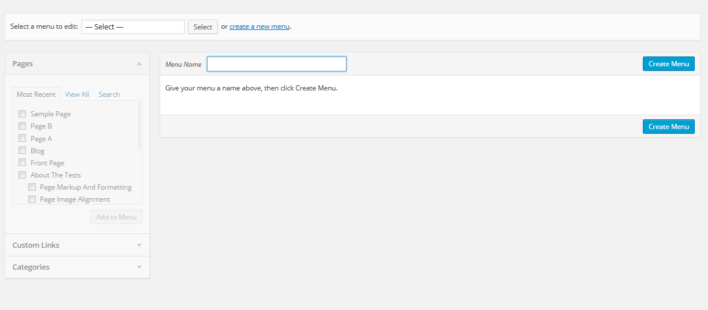
Step 3 - Select Create a new menu at the top of the page.
Step 4 - Enter a name for your new menu in the Menu Name box.
Step 5 - Click the Create Menu button. Your menu is now defined, and you can now add pages to it (steps below).
2. Adding pages to your menu
Step 1 - Locate the pane entitled Pages.
Step 2 - Within this pane, select the View All link to bring up a list of all the currently published Pages on your site.
Step 3 - Select the Pages that you want to add by clicking the check box next to each Page's title.
Step 4 - Click the Add to Menu button located at the bottom of this pane to add your selection(s) to the menu that you created in the previous step.
Step 5 - Click the Save Menu button once you've added all the menu items you want. Your custom menu has now been saved.
The Screen Options allow you to choose which items you can use to add to a menu. Certain items, like Posts or Products are hidden by default. The Screen Options are located in the top right corner of your WordPress Dashdoard.


3. Assigning a Menu to a Location
Once you've created a menu and filled it with items, it's time to assign it to one of the theme pre-defined locations.
- Go to Appearance > Menus and click Manage Locations.
Menu is assigned after import data by "One click import".
4. Configure Mega Menu
With Tbay Megamenu, you can enjoy creating the Mega Menu you want
Step 1 - Add new Megamenu
Step 2 - Choose Mega menu for parent menu
Set Up Home Page
Go to Apperances -> Settings -> Reading
Header Elementor Builder
- Step 1 Configure Elementor for Header Builder
-
Step 2 - From admin Dashboard, navigate to Nika Header Elementor > Add New Header
-
Step 3 - Build your header style with unlimited layout
- Step 4 - After create your Header. Choose header for website in Theme Options.
Set Up Footer
1. Set Up Tbay Footer with WPBakery
Step 1 - From admin Dashboard, navigate to Tbay Footer > Add Profile Footer
Step 2 - Using Visual Composer backend editor mode then add element to your Footer
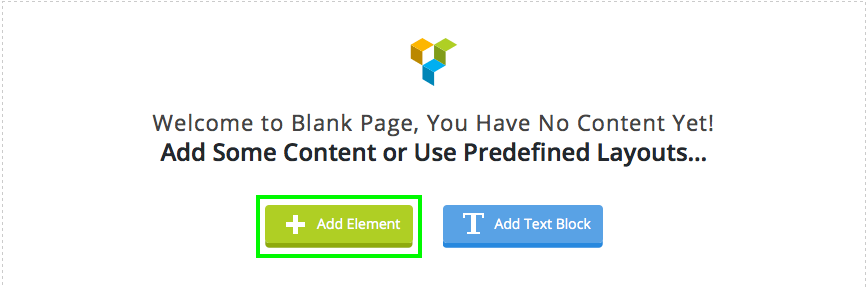
Step 3 - Build your footer style with unlimited layout
Footer layouts for you.
Footer 1.
Front end look like :
Visual Element Layout setting
Step 4 - After create your footers. Choose footer for website in Theme Options.
Choose your footer for page.
If you want specific Footer for one of your pages. Please go to your page configuration. Select Footer version you want to display only on that page.
Watch the "Set Up Footer Video tutorial" tutorial2. Create a Footer with the template we provide - Only for Elementor version
Choose Sample Data > elementor > footer > template-footer-xxx.json
Choose Custom Menu for Footer
Select Footer default in Theme Options
Configure Blog
Show Excerpt in the post
Configure WooCommerce
- Choose Shop Page: Go to WooCommerce > Settings > Products > General > Shop Page
- Choose Cart and Checkout Page: Go to WooCommerce > Settings > Advanced
- Show Countdown Timer and Video in product
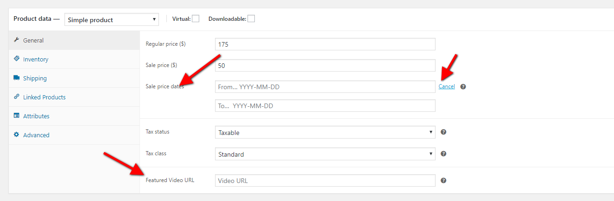Set Up Testimonials
Step 1: Go to Tbay Testimonial from Dashboard then create content of Testimonials
Step 2: Drag Tbay Testimonial elements by using Visual Composer on page you want to display testimonials.
You can choose some setting like title, skin ....
Demo:
Set Up Brands
Step 1: Go to Tbay Brands from Dashboard then create Brands
Step 2: Drag Tbay Brands elements by using Visual Composer on page you want to display brands.
You can choose some setting like title, number of brands ....
Demo:
Set Up Contact Page
1. Create Contact Form.
Use this plugin to make the contact form on contact page. Navigate to Contact - Contact Forms, there is a form named Contact form 1, if you want to create a new form, click on Add New button.
Click on the form title to edit form, copy this code and paste into Form box:
2. Create Contact Page
Step 1 - Log in to your WordPress Administration Panel (Dasrdoard)..
Step 2 - Click on Pages > Add New.
Step 3 - Give your page a name then Change the Editor to Backend Editor ( you need to have the Visual Composer plugin activated ).
Step 4 - Click on the Add Element button

Step 5 - Select the Contact Form 7 element.
Step 6 - The Contact Form 7 Settings should appear. Select the Form you want to use you can also customize the Color and change the fields layout and button design
Step 7 - Update / Publish your page
Set Up MailChimp
1. MailChimp API
The API key for connecting with your MailChimp account. Get your API key here.
2. Form
Theme Options
GreenMart Theme use Customizer provides an ultra effective and intuitive way to customize theme layout & setting with real-time preview. Bring all of settings to customizer, you do not need to using another theme option anymore
To access Customizer go to your admin Dashboard Navigate to Appearance >> Customize
General
Manage overviews such as: Active Skins, Preload Website, Enable Config Image Size.
- Preload Website: Choose a Preloader Images for your website.
Watch the video "Choose a Preloader Images for your website" tutorial See more the video "Custom Preloader with your logo" tutorial- Enable Config Image Size: Turn on this function then customize the image size here: Appearance > Customize > WooCommerce > Product Images
Header for WPBakery
Upload Logo, Select your header style, config Sticky Header and Search Form

- Select Header Layout: Each skin provides different types of headers
- Upload Logo: Upload your logo for Desktop and Tablet
- Keep Header: Enable/Disable sticky header
- Header Login: Enable/Disable Header Login
Search Form (Only available in WPBakery version. Because with Elementor, you can configure it in Header Builder)
Header for Elementor
Select Header Layout and Upload Logo
- Select Header Layout: We provide a "Default Header" and other Headers that you can customize with Elementor through the "Header Builder".
Footer
Select Footer Layout Type and manage Back to Top button.

- Select Footer Layout: Choose a footer for your website.
- "Back to Top" Button: Enable or disable "Back to top" button.
Blog - Fresh Food & Grocery Skin
Manage global setting for Blog.
- Breadcrumb: Enable or disable Breadcrumb
Blog Article
Blog Article: Some options exclusively for Fresh Food & Grocery Skin
Blog
NOTE: Related Posts configure does not apply to Fresh Food & Grocery Skin
WooCommerce
There are some functions that are exclusive to Fresh Skin
- Sale Tag Settings: Allows you to choose the display type of the discount label
- Label featured: Enable/Disable and change the text of Label Featured
- Enable Total Sales: Enable/Disable Total Sales in Shop List and Single Product

- Enable WooCommerce Catalog Mode: If this function is enabled, the "Add to Cart" and "Mini Cart" buttons on the header will disappear
- Enable/Disable Ajax update quantity: Enable/Disable Ajax update quantity (Only Cart Page)
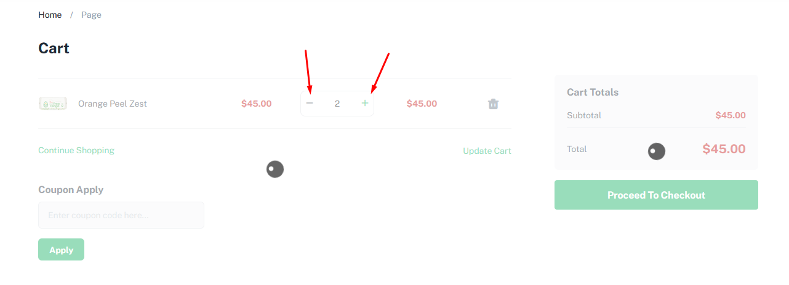
- Disable Ajax poup cart when click add to cart: Usually there will be a notification when the add to cart is successful. Enable this option to turn off that notification
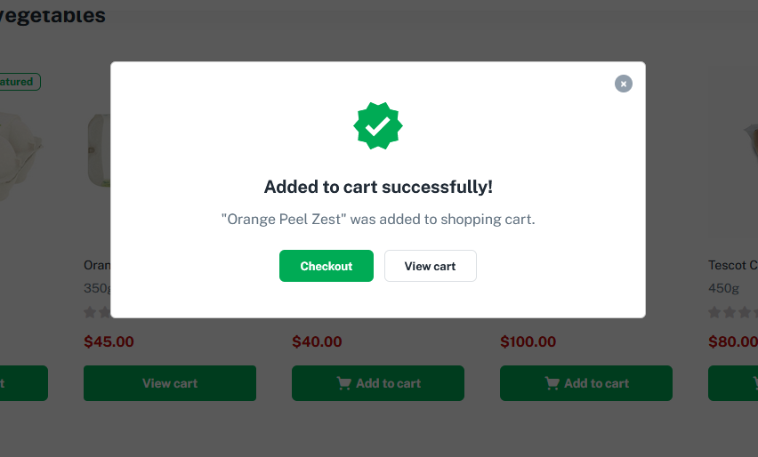
- Hide sub title product: Show/Hide sub title product
- Enable WooCommerce Quantity Mode: Enable/Disable show quantity on Home Page and Shop Page. Quantity Mode in skins will have different operations. You should see the example below.
1. WooCommerce Quantity Mode for Organic, Medicine and Flower Skin
2. WooCommerce Quantity Mode for Fresh Skin
Watch the video "[GreenMart 4] Fresh Food Skin - Min/Max/Step Quantity Option" tutorial full
Product Archives
- Product Layout: Select the layout you want to apply on your archive product page.
- Title, Description, Image in category: Enable/Disable title, description, image
- Left/Right Sidebar: Choose a sidebar for left or Right sidebar.
- Display Mode: Choose Grid or List
- Number of Products Per Page
- Product Columns: Select the number of columns to display (from 1 to 6).
- Show Second Image (Hover): Show/Hide Second Image when hover
NOTE: Left Sidebar - Main Content - Right Sidebar => Elementor version is not supported
Single Product
NOTE: Left Sidebar - Main Content - Right Sidebar => Elementor version is not supported
- Single Product Layout: Select the layout you want to apply on your Single Product Page.
- Left/Right Sidebar: Choose a sidebar for left or Right sidebar.
- Style Single Product Thumbnail: Choose a style single product thumbnail (Thumbnail Horizontal or Thumbnail Vertical)
- Enable Buy Now
- Show Products Countdown
- Show Product navigator
- Show Social Share
- Style Product Tabs: Choose one of the 4 styles provided
- Show Product Review Tab: Show/Hide Product Review Tab
- Show Products Releated: Show/Hide Products Releated
- Show Products upsells: Show/Hide Products upsells
- Number Images Thumbnail to show
- Number of related/upsells products to show
- Releated Products Columns
Mini Cart
- Enable Quantity on Mini-Cart
Breadcrumb
- Breadcrumbs Background Color or Image
Checkout
- Show Image: Show image on page Checkout
Mobile
Upload Mobile Logo, Hidden Footer Mobile and config number of products in a row on mobile.
Mobile Header
- Upload Mobile Logo: Upload your logo for mobile devices
- Logo all page = On: Shown logo on all pages
- Logo all page = Off: Show page title in subpages
Mobile Footer
- Show Desktop Footer: Show/Hide Desktop Footer in mobile
- Show Mobile Footer: Show/Hide Mobile Footer
- Menu Recent Viewed: Only applicable for Fresh Skin
Mobile Menu
Watch the "Mobile Menu Video" tutorialMobile WooCommerce
- Show Add to Cart on Mobile (Home Page and Shop Page)
- Disable Add to cart fixed = On: On Page Single Product
- Disable Add to cart fixed = Off: On Page Single Product
- Add To Cart Form Type = Popup: On Page Single Product
- Add To Cart Form Type Video tutorial
- Show Quantity: If this function is turned off, the number of times to add to cart is only one
Mobile Search (Applies only to Elementor version)

Style
Typography: Font Source, Google Code, ...
Custom style for theme: Typography, Top Bar, Header, ...
Main
Top Bar: Background, Text Color, ... (Applies only to WPBakery version)
Header: Background, Text Color, ... (Applies only to WPBakery version)
Main Menu: Link Color, Link Color Active, ... (Applies only to WPBakery version)
Footer: Background, Heading Color, ... (Applies only to WPBakery version)
Copyright: Background, Text Color, ... (Applies only to WPBakery version)
Header Mobile (Applies only to Elementor version)
Socials
Enable Code Share and Addthis your code. You get your code share in https://www.addthis.com
Performance
Speed up website: Minified version of functions.js and device.js file will be loaded
- Yes: The Minified JS file will be loaded, eg: greenmart\js\functions.min.js
- No: The normal JS file will be loaded, eg: greenmart\js\functions.js
Custom CSS/JS
WooCommerce Setting
Shop Page
Choose Shop Page: Go to WooCommerce > Settings > Products > General > Shop Page
Cart & Checkout Page
Choose Cart and Checkout Page: Go to WooCommerce > Settings > Advanced
Quantity on Mini-Cart
Enable Quantity on Mini-Cart in the Theme Options
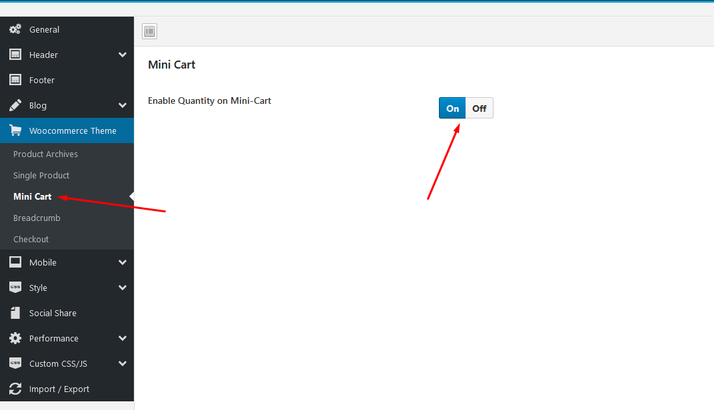
Free Shipping on Mini-Cart
To use this function, you need to install the plugin https://wordpress.org/plugins/woocommerce-advanced-free-shipping/
1. Install the plugin "WooCommerce Advanced Free Shipping"
2. Configure Advanced Free Shipping
Variable Products
To use this function, you need to install the plugin https://wordpress.org/plugins/woo-variation-swatches/

Photo Reviews
To use this function, you need to install the plugin https://wordpress.org/plugins/woo-photo-reviews/
Rating Counts & Filters Configure

Questions and answers of the customers
To use this function, you need to install the plugin https://wordpress.org/plugins/yith-woocommerce-questions-and-answers/
Configuration
Notification for WooCommerce
To use this function, you need to install the plugin https://wordpress.org/plugins/woo-notification/
Configuration

Frequently Bought Together
To use this function, you need to install the plugin https://wordpress.org/plugins/yith-woocommerce-frequently-bought-together/
Configuration
Show WooCommerce Catalog Mode
Show WooCommerce Catalog Mode on your site - Hide Mini Cart and button "Add to cart"
Configuration in Theme Options
WooCommerce Quantity Mode
Quantity Mode in skins will have different operations. You should see the example below.
WooCommerce Quantity Mode for Organic, Medicine and Flower Skin
WooCommerce Quantity Mode for Fresh Skin
WooCommerce Quantity Mode for Fresh Skin uses Ajax. So it will not be compatible with the plugin "Variation Swatches for WooCommerce" Pro version
Watch the video "[GreenMart 4] Fresh Food Skin - Min/Max/Step Quantity Option" tutorial full
Countdown Timer and Video in product
Show Countdown Timer and Video in product
Watch the "Countdown Timer in product" video tutorialDisplay Category Image and Description
Enable / Disable this feature in Theme Options
Watch the "Display Category Image and Description" video tutorialEnable/Disable Ajax add to cart
Enable/Disable Ajax add to cart in Single Product Page
Enable Buy Now
Enable Buy Now to stimulate shopping on your site
On Desktop
On Mobile
Configuration in Theme Options
Enable Total Sales
Enable Total Sales to stimulate shopping on your site
On Desktop
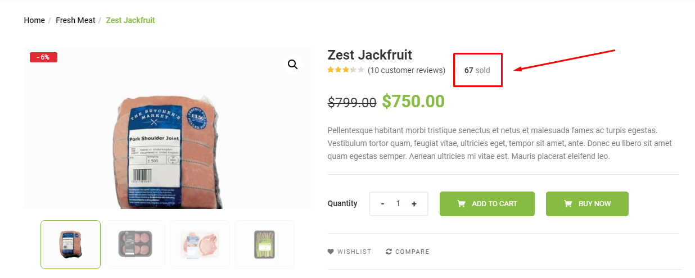
On Mobile
Configuration in Theme Options
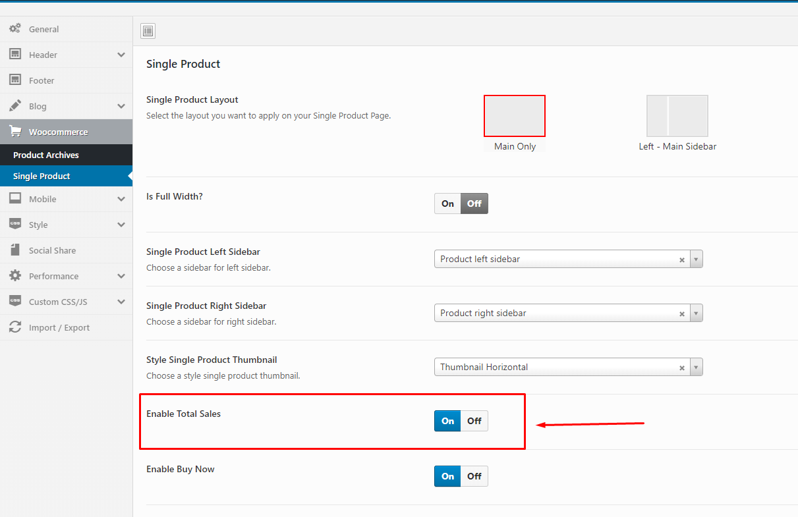
Configure Wishlist
To use this function, you need to install the plugin https://wordpress.org/plugins/yith-woocommerce-wishlist/
Add to Wishlist Options:
Wishlist page Options:

Configure Compare
To use this function, you need to install the plugin https://wordpress.org/plugins/yith-woocommerce-compare/
GENERAL SETTINGS:
Multivendor Marketplace
Dokan multi-vendor marketplace
Dokan is the best front end multi-vendor marketplace on WordPress, powered by WooCommerce. It helps you to build your own marketplace similar to Amazon, Shopify, eBay, Magento like marketplaces in under 30 minutes.
1. Installing Dokan
Install Now
Activate Dokan

2. Set up Dokan
Welcome to the world of Dokan!

Store Setup
Selling Setup
Withdraw Setup

Recommended for All Dokan Marketplaces

Your Marketplace is Ready!

After completing the installation, we can manage the Dokan here
3. Dokan Shortcodes - Create Pages
Dokan Multivendor Marketplace has several shortcodes that help you create important pages on the go. In this doc, we are going explain how to use these shortcodes and when to use them.
First, let us introduce the available shortcodes.
| Name | Shortcode | Description |
| Dashboard | [dokan-dashboard] |
Display vendor dashboard and all the elements for the vendor. |
| Store Listing | [dokan-stores] |
Lists all the stores available on the site on a single page. |
| My Orders | [dokan-my-orders] |
Lists all the orders for the customer. |
| Best Selling Products | [dokan-best-selling-product no_of_product="5" seller_id="" ] |
Display 5 best selling products of vendors. |
| Top Rated Products | [dokan-top-rated-product] |
Lists all the top rated products. |
| Become a Vendor [Pro version only] | [dokan-customer-migration] |
Creates Vendor Registration Form. |
Instructions
At first, Navigate to- WP Dashboard → Pages → Add New Page
Paste the above ShortCode code above which you want to create the page

4. Managing Vendor’s Selling Capabilities
Dokan is the best Multivendor Marketplace for WordPress. You can easily manage thousands of vendors and get commissions from their sales. In this doc, we will discuss the selling capabilities of vendors, how admins can enable or disable it and how to set vendor commission.
Vendor Commission
You can set vendor commission for your marketplace depending on many things. In this doc, we will focus on the global commission for your vendors. You can read about different types of vendor commission from here.
To define the vendor commission for your vendor, navigate to – WP-Admin→Dokan→Settings→Selling Options Tab then choose the Commission Type, then Admin Commission.

Selling Capability
At first, you need to activate your vendors' selling capabilities so that they can start selling on your marketplace. To do so, Navigate to –
WP-Admin→Users then edit the user profile.
WC Marketplace
WCMp is a WooCommerce based multi vendor solution engineered to address all your marketplace needs. Try and fall in love with WCMp, yes it’s that simple
1. Installing WC Marketplace
Install Now
Activate WC Marketplace

2. Set up WC Marketplace
Welcome to the WC Marketplace family!

Store Setup

Commission Setup
Payments
Capability

Yay! All done!
After completing the installation, we can manage the WC Marketplace here

3. WC Marketplace Shortcodes - Create Pages
You can see List of Shortcodes and instructions for use here
4. WC Marketplace More Documentation
You can read more WCMp instructions here
WCFM Marketplace – WooCommerce Multivendor Marketplace

WooCommerce Multi vendor Marketplace (WCFM Marketplace) is the one-stop multi-vendor plugin that you’ve been waiting for
1. Installing WCFM Marketplace (It is necessary to install all 3 plugins below)
Install Now
Activate WCFM Marketplace

2. Set up WCFM Marketplace
Welcome to WooCommerce Multi-vendor Marketplace!
Dashboard setup
Marketplace setup

Commission setup

Withdrawal setup
Setup WCFM Maketplace vendor registration:
Dashboard Style

Capability
We are done!

3. Visible Sold By
Enable/Disable Sold By display for products.

Inquiry button display position at Single Product Page.

4. Store policies
Store policies are very much important for any e-commerce sites. Now, using WCfM you may define all types of policies for your store and products.

5. WCFM Maketplace - Membership
A simple membership plugin for offering FREE AND PREMIUM SUBSCRIPTION for your multi-vendor marketplace.
You may set up unlimited membership levels (example: free, silver, gold etc) with different pricing plan, capabilities and commission.
Payment Methods
Registration Form Fields
 Watch the video tutorial for "WCfM - Membership Setup Guide"
Watch the video tutorial for "WCfM - Membership Setup Guide"
6. WCFM MARKETPLACE – STORE, WIDGETS & SHORT CODES - Create Pages
You can see List of Shortcodes and instructions for use here
7. WCFM MARKETPLACE More Documentation
You can read more WCFM instructions here
Google Map API Key
1. Get Google Map API Key
Dokan Setting → API Key

WC Marketplace Setting → Click here to generate key

2. Get started
3. Pick Maps and Continue

4. Select or create project

5. Enable Google Maps Platform
6. Copy YOUR API KEY
7. Add the widget "Dokan: Store Location"
Watch the video tutorial for "Dokan - Google Map API Key"Slider Revolution Setting
Import Slider Template
Slider Revolution Responsive Tutorial
How to update Slider Revolution and WPBakery Page Builder?
WPBakery Page Builder Setting
How to use the "Tbay Element" of GreenMart theme?

Enable WPBakery Page Builder for pages, posts and custom post types
How to update Slider Revolution and WPBakery Page Builder?
Elementor Page Builder Setting
Header Builder - Special Features
- Step 1 Configure Elementor for Header Builder
-
Step 2 - From admin Dashboard, navigate to GreenMart Header Elementor > Add New Header
-
Step 3 - Build your header style with unlimited layout
- Step 4 - After create your footers. Choose header for website in Theme Options.
How to use the "GreenMart Elements" of GreenMart theme?
Some special Elements
1. Greenmart Home Banner
2. Greenmart Account
3. Greenmart Mini Cart
4. Setting Navigation
5. Setting Pagigation

6. Bold text in the title
7. Element Product Style
Elementor Settings
Set Up Home Page
Go to Apperances -> Settings -> Reading
Config in Front page - Edit with Elementor
Create a Footer with the template we provide
Choose Sample Data > elementor > footer > template-footer-xxx.json
Choose Custom Menu for Footer
Select Footer default in Theme Options
Translations
Use the plugin "Loco Translate"
Loco Translate provides in-browser editing of WordPress translation files.
It also provides localization tools for developers, such as extracting strings and generating templates.
Watch the "Loco Translate" video tutorial1. Install the plugin "Loco Translate"

2. Update Language Template


"Loco Translate - Warning: files over 100 KB have been skipped". If you have problems above, follow the following video tutorial to fix that
 Watch the "Loco Translate - Warning: files over 100 KB have been skipped." video tutorial
Watch the "Loco Translate - Warning: files over 100 KB have been skipped." video tutorial
3. Create your language > Choose a location: Other (NOT Author)


4. Manual translation: You will manually translate each text

5. Automatic Translate: Install the plugin "Automatic Translate Addon For Loco Translate"
 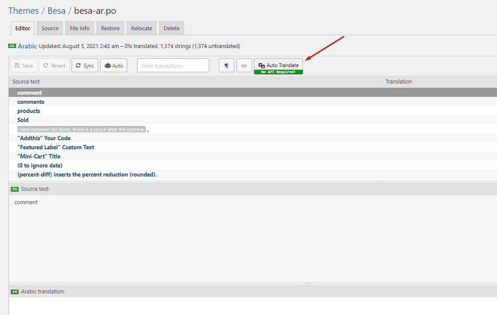
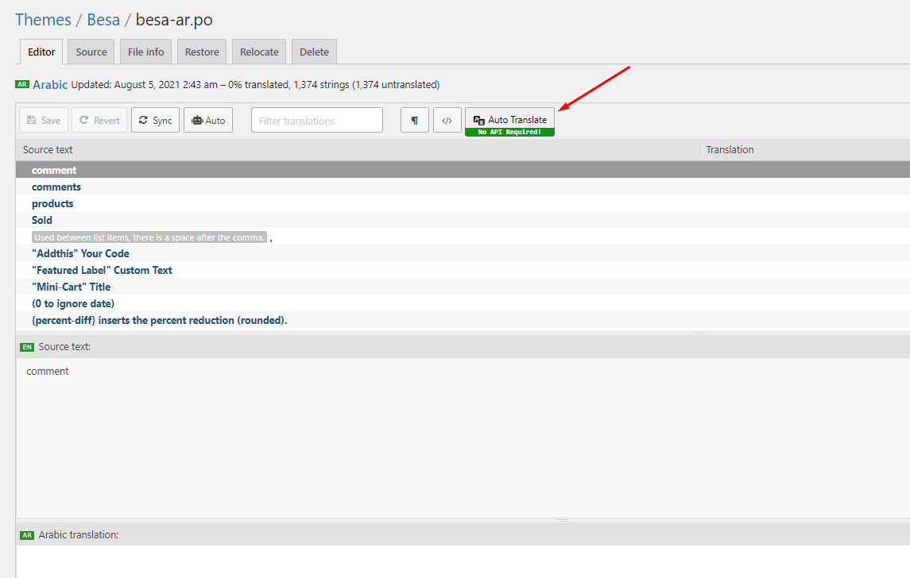


6. Some text need edit in Theme Options
Video Tutorial:
Use the plugin "WPML Plugin"
GreenMart’s compatibility with WPML allows you to build fully functional multilingual eCommerce websites. In this tutorial, you will learn how to translate a website built with Urna’s using WPML.
- This is a basic guide to using WPML - https://docs.thembay.com/wpml/
- If you have problems using WPML, please send us a ticket - https://tickets.thembay.com/
Optimization September 05, 2020
GreenMart is created with speed and performance in mind. On it's own, GreenMart is highly optimized and provides you with the ability to get extremely high speed test scores on tools like GTMetrix, Google PageSpeed Insights, and Web Page Speed Test. Having said this, your site's speed and performance does not entirely rely on the theme and what you put into it also has a great impact on your speed scores. Continue reading below to learn more about site optimization.
When it comes to optimization, GreenMart plays a much smaller part than you would imagine. GreenMart is optimized so that it's fast on it's own, but ultimately, user content will dictate how fast your site will perform. Images play a huge factor in speed results, as well as hosting, server, extra plugins, content and more.
For example, if you have a site that's 1100px wide and upload a 2000px image on a page, your page speed score will drop heavily. This is because places like Google or GTMetrix will see a 1100px container that unnecessarily has an image on it that is twice it's size.
You can see articles on how to speed up your website here
Update GreenMart Theme
Method 1. Use the plugin "Envato Market" plugin
You need to follow these steps to perform the update:
- 1. Download the Envato Market plugin and install it through the WordPress Dashboard: Click here to download
- 2. Activate the plugin.
- 3. Login and Create Token here https://build.envato.com/my-apps/#tokens
- 4. Envato Market Items
- 5. Update the Theme
Method 2. Manually Install the Update
This method requires more steps and manual work. First, you need to manually download the new theme package from your ThemeForest account. Once you have the new theme package, you can choose to upload the theme via WordPress or via FTP. Please see the information below for how to download new files, and install it via WordPress or via FTP.
How To Receive Free Support
- Step 1 – Log into your ThemeForest account and navigate to your Downloads tab. Find the greenmart theme purchase.
- Step 2 – Click the Download button next to it and either choose to download the Installable WordPress Theme, which is just the WordPress file, or choose to download the Main Files which is the entire package that contains everything.
- Step 3 – After downloading the files, you need to decide if you want to install the update via FTP or via WordPress. For directions on both methods, please continue reading below.
How To Update Your Theme Via FTP
- Step 1 – Go to wp-content > themes folder location and backup your greenmart theme folder by saving it to your computer, or you can choose to simply delete it. Your content will not be lost.
- Step 2 – Retrieve the greenmart.zip file from your new ThemeForest download and extract the file to get the updated greenmart theme folder.
- Step 3 – After extracting the updated greenmart theme folder, simply drag and drop the new greenmart theme folder into wp-content > themes folder location. Choose to Replace the current one if you did not delete the old greenmart theme folder
- Step 4 – Lastly, update the included plugins. You will see a notification message letting you know a new version of the plugins are available and need to be updated. Follow the onscreen prompts to update the plugins
IMPORTANT NOTE
If you upgrade through FTP, please visit your WP-admin so any new theme options can be registered. If you do not do this and also have wp-debug turned on, you may see php notices on the front end. They will disappear once you visit the WP admin.
How To Update Your Theme Via WordPress
- Step 1 – You need to deactivate the current greenmart theme located in the Appearance > Themes section by activating a different theme. Once you activate a different theme, you can delete the greenmart theme. Dont worry, your content will not be lost.
- Step 2 – Retrieve the new greenmart.zip file from your ThemeForest download. If you downloaded the Main Files from ThemeForest, you need to unzip the archive file you received to get the greenmart.zip file inside.
- Step 3 – Upload the greenmart.zip file to the Appearance > Themes section by clicking on the “Install Themes” tab at the top and then choosing to upload the zip file.
- Step 4 – Once it finishes uploading, choose to activate the theme.
- Step 5 – Lastly, update the included plugins. You will see a notification message letting you know a new version of the plugins are available and need to be updated. Follow the onscreen prompts to update the plugins
FAQs
Wordpress 5.0 enable/disable Gutenberg in WPBakery
After updating WordPress 5.0, your WPBakery Edit will not work, follow the instructions in the following video to fix that.
Watch the video tutorialHow to change the product's image size?
There are 2 ways to do this:
1. Turn On "Enable Config Image Size" in Theme Options
Then config in WooCommerce Customize:
2. Override code in child theme GreenMart
- Active child theme GreenMart
- Add the following code to the file functions.php
- Active child theme GreenMart
remove_action( 'after_setup_theme', 'greenmart_woo_setup' );
Then config in WooCommerce Setting:
* Regenerate Thumbnails with the "Regenerate Thumbnails" plugin.
"Select Category" drop down list don't show
If "Select Category" drop down list don't show, please follow the following video tutorial
Watch the video tutorialHow to Override CSS?
You can override css by 3 ways below :
1. Use Custom Css in ThemeOptions
2. Install Child theme and override css
The file: ROOT/wp-content/themes/greenmart-child/style.css
3. Use "Additional CSS" in Customize
Watch the video tutorialChild Theme
Use Child Themes to Modify Theme
A child theme is a theme that inherits the functionality and styling of another theme, called the parent theme. Child themes are the recommended way of modifying an existing theme.
Why use a Child Theme?
There are a few reasons why you would want to use a child theme:
- If you modify a theme directly and it is updated, then your modifications may be lost. By using a child theme you will ensure that your modifications are preserved.
- Using a child theme can speed up development time.
- Using a child theme is a great way to learn about WordPress theme development.
How to use a Child Theme?
In this theme, we offer you a sample Child Theme (greenmart-child.zip). You install it like normal theme.
But you can create your own Child Theme form by following the instructions below
Link instructions How to Create a Child Theme
How To Enable the Registration Form on the ‘Login/My Account’ page?
In case you cannot see the Registration Form on the My Account page or checkout page, it means you need to enable it.
You can find this setting by navigating to WooCommerce >> Settings.
Open Account Tab In the Registration section, make sure the" Enable registration on the "Checkout" page" and “Enable registration on the “My Account” page” options is checked.
This is what you should be seeing on your screen:
How to configure Mobile Menu?
How to configure Mega Menu?
Contributors
A product will be more and more perfect if received positive contributions from customers. Many Thanks to All the Contributors:

TSHmedia

DijitalC
Ferdinand Holzner
Changelog
Version 4.0.17 - February 10, 2023
- Compatible with WooCommerce 7.3.x
- Compatible with Elementor 3.10.x
- [FIX] Fix the plugin Variation Swatches For WooCommerce Pro 2.0.18 and above
Version 4.0.16 - December 23, 2022
- Compatible with WooCommerce 7.2.2
- [FIX] Fix Out Of Date the file "greenmart\woocommerce\global\quantity-input.php"
- [FIX] Fix Out Of Date the file "greenmart\woocommerce\global\themes\organic\quantity-input.php"
- [FIX] Fix Out Of Date the file "greenmart\woocommerce\global\themes\organic-el\quantity-input.php"
- [FIX] Fix Out Of Date the file "greenmart\woocommerce\global\themes\health\quantity-input.php"
- [FIX] Fix Out Of Date the file "greenmart\woocommerce\global\themes\flower\quantity-input.php"
- [FIX] Fix Out Of Date the file "greenmart\woocommerce\global\themes\fresh-el\quantity-input.php"
Version 4.0.15 - December 15, 2022
- Compatible with WooCommerce 7.2.x
- [FIX] Fix Out Of Date the file "greenmart\woocommerce\global\quantity-input.php"
- [FIX] Fix Out Of Date the file "greenmart\woocommerce\global\themes\organic\quantity-input.php"
- [FIX] Fix Out Of Date the file "greenmart\woocommerce\global\themes\organic-el\quantity-input.php"
- [FIX] Fix Out Of Date the file "greenmart\woocommerce\global\themes\health\quantity-input.php"
- [FIX] Fix Out Of Date the file "greenmart\woocommerce\global\themes\flower\quantity-input.php"
- [FIX] Fix Out Of Date the file "greenmart\woocommerce\global\themes\fresh-el\quantity-input.php"
Version 4.0.14 - November 16, 2022
- [FIX] Fix style variation color
Version 4.0.13 - November 04, 2022
- Compatible with WordPress 6.1
- Compatible with WooCommerce 7.0.x
- Compatible with Elementor 3.8.x
- Compatible with WPBakery Page Builder 6.10.0
- [FIX] Fix Out Of Date the file "greenmart\woocommerce\cart\cart.php"
- [FIX] Fix Out Of Date the file "greenmart\woocommerce\myaccount\form-login.php"
Version 4.0.12 - October 10, 2022
- [FIX] Fix bug with Treeview menu on WPBakery
Version 4.0.11 - September 16, 2022
- [FIX] Fix error line 134 on file 'greenmart/elementor_templates/nav-menu.php'
Version 4.0.10 - September 15, 2022
- Compatible with WooCommerce 6.9.x
- [ADD NEW] Add new 'locate_template' on folder 'greenmart/elementor_templates' (Can override file on folder 'elementor_templates' in child theme)
- [FIX] Fix the incorrect display price of the 'Wholesale Dokan' function on the shopping cart page
Version 4.0.9 - June 27, 2022
- [FIX] Fix responsive error on mobile page cart, checkout
- [FIX] Fix js "Gallery image" not working slider on the single product of skin page builder WPBakery
- [FIX] Fix js treeview menu
Version 4.0.8 - May 26, 2022
- Compatible with WordPress 6.0
- [FIX] Fix error Sumoselect js
- [FIX] Fixed column division in the page builder elementor
Version 4.0.7 - May 06, 2022
- [FIX] Fix a little style
Version 4.0.6 - March 09, 2022
- Compatible with WooCommerce 6.3.x
- [ADD NEW] Add new "Min/Max/Step Quantity Option"
Version 4.0.5 - March 04, 2022
- Compatible with WooCommerce 6.1.x
- [FIX] Fix bug style Dokan plugin
- [FIX] Fix style skin "Greenmart Fresh"
Version 4.0.4 - January 27, 2022
- Compatible with Wordpres 5.9
- [FIX] Fix Elementor page builder not receiving "elements basic" settings
Version 4.0.3 - January 11, 2022
- Compatible with WooCommerce 6.0
- Compatible with Elementor 3.5.x
- [FIX] Fix Elementor page builder not receiving responsive settings
- [FIX] Fix fail to style "cross-sell" on skin Fresh
- [CHANGE] change the text "You may be like" to "You may like" on file "greenmart\woocommerce\cartcross-sells.php"
Version 4.0.2 - December 06, 2021
- Compatible with PHP 8
Version 4.0.1 - November 02, 2021
- [FIX] Fix error when use PHP 7.0
- [FIX] Fix style when multiple brands
Version 4.0.0 - October 18, 2021
- [ADD NEW] Add new demo "Greenmart Fresh"
- Compatible with WooCommerce 5.8
- Compatible with Elementor 3.4.x
- Compatible with Slider Revolution Responsive 6.5.x
- Compatible with the plugin "Photo Reviews for WooCommerce"
- Remove font icon "themify-icons"
Version 3.1.6 - August 19, 2021
- Compatible with WooCommerce 5.6
- Compatible with Elementor 3.4.x
- Compatible with WPBakery Page Builder 6.7.x
- [FIX] Update fix style wishlist 3.0.25
Version 3.1.5 - July 31, 2021
- [FIX] Fix quantity mode bug javascript
Version 3.1.4 - July 28, 2021
- [FIX] fix bug style marketplace vendor
Version 3.1.3 - July 22, 2021
- Compatible with Wordpres 5.8
- [FIX] Fix update WordPress 5.8 widgets it doesn’t work on the admin page
Version 3.1.2 - July 19, 2021
- [FIX] Fix style mobile menu
Version 3.1.1 - July 16, 2021
- [ADD NEW] Add new option "Ajax canvas Menu" to addons "Greenmart Nav Menu"
- [ADD NEW] Add new option "Ajax Toggle Menu" to addons "Greenmart Nav Menu"
- [ADD NEW] Add new option "Ajax Product Tabs" to addons "Greenmart Product Tabs"
- [ADD NEW] Add new option "Ajax Categories Tabs" to addons "Greenmart Product Categories Tabs"
- [ADD NEW] Add new options "Enable 'Ajax Dropdown' Mega Menu" in Theme Options/General
- [ADD NEW] Add new options "Enable Ajax Canvas Menu" in Theme Options/Header/ Header Configuration only skin 'organic'
- [ADD NEW] Add new options "Sortable Sharing" required option "TB Share" in Theme Options/Social Share
- Compatible with WPBakery Page Builder 6.7.x
- Compatible with Elementor 3.3.x
- Compatible with WooCommerce 5.5.x
- [FIX] Fix custom color bug
Version 3.1.0 - May 27, 2021
- [ADD NEW] Add new demo Greenmart Organic WPML
- [ADD NEW] Add new options "Show Image" in Theme Options/WooCommerce/Checkout
- Compatible with WooCommerce 5.3.x
- Fully compatible with WPML
- Compatible with Elementor 3.2.x
- Compatible with Fix WCMP version 3.7 3.2.x
- [FIX] Fix bug new version 3.7.x plugin "WC Marketplace"
Version 3.0.11 - April 23, 2021
- [FIX] Fix Single Product Layout Image Gallery on RTL
Version 3.0.10 - April 16, 2021
- Compatible with WooCommerce 5.2
- Compatible with WPBakery Page Builder 6.6.x
- Compatible with Slider Revolution Responsive 6.4.x
+ [REMOVE] Remove option "Enable LazyLoadImage" in Theme Options/General
- [FIX] Fix Single Product Layout "Image Vertical" on RTL
- [FIX] Fix Out Of Date the file "greenmart\woocommerce\cart\mini-cart.php"
Version 3.0.9 - March 23, 2021
- [FIX] Fix the error of importing data
Version 3.0.8 - March 08, 2021
- [FIX] Fix duplicate button of "YITH WooCommerce Quick View" Version 1.5.1
Version 3.0.7 - March 02, 2021
- [FIX] Fix the error "Quantity Mode"
Version 3.0.6 - February 26, 2021
- Compatible with WooCommerce 5.0
- Compatible with WPBakery Page Builder 6.6.x
- [FIX] Fix the error of importing data
- [FIX] Elementor fixes the error of active option "Optimized DOM Output"
Version 3.0.5 - January 26, 2021
- Compatible with WooCommerce 4.9
- [FIX] Fix error style option "Enable Store Sidebar From Theme" on Dokan plugin version 3.1.x
- [FIX] Fix the error of unable to translate text in "Mobile search form"
- [FIX] Fix the addon "Product Countdown", "Tbay Products" for WPBakery Page Builder
- [FIX] Fix the error page "No products were found"
Version 3.0.4 - December 18, 2020
- [ADD NEW] Add New Demos "Organic WCFM" and "Organic WCMP" and "Organic WC Vendors" with the Elementor Page Builder plugin.
- [ADD NEW] Add sidebar mobile on-page vendor store Dokan
- Compatible with WordPress 5.6
- Compatible with WooCommerce 4.8
- Compatible with WPBakery Page Builder 6.5.x
- [FIX] Fix some words in the theme that cannot be translated
Version 3.0.3 - November 25, 2020
- [FIX] Fix Out Of Date the file "greenmart\woocommerce\content-product_cat.php"
- [FIX] Fix reviewing on the single product page
Version 3.0.2 - November 21, 2020
- [HOT] Add new "Add To Cart Form Popup" on Single Product page in mobile
- [ADD NEW] Add new options "Add To Cart Form Type" in Theme Options/Mobile/Mobile WooCommerce
- [ADD NEW] Add New Demos "Organic Dokan" with the Elementor Page Builder plugin.
- Compatible with WPBakery Page Builder 6.4.x
Version 3.0.1 - November 18, 2020
- [ADD NEW] Add sidebar mobile on-page shop
- [FIX] Fix fail sticky header
Version 3.0.0 - November 13, 2020
- Compatible with WooCommerce 4.7
- [ADD NEW] Compatible with the Elementor Page Builder plugin.
- [ADD NEW] Add New Demos "Organic" with the Elementor Page Builder plugin.
- [ADD NEW] Header builder with Elementor page builder
- [ADD NEW] Footer builder with Elementor page builder
- [REQUIRED] Required update "Tbay Framework" version 2.2.4 plugin
- [UPDATE] Update new sample data width demo Elementor Page Builder plugin
- [UPDATE] Update documents
Version 2.5.2 - October 29, 2020
- [FIX] Fix security errors on "Search Ajax"
Version 2.5.1 - September 28, 2020
- Compatible with WooCommerce 4.5
- Compatible with WPBakery Page Builder 6.4.x
- [REMOVE] Remove addon Tbay Instagram
- [FIX] Fix the array skin error
Version 2.5.0 - September 05, 2020
- [UPDATE] Update new import sample data feature
Version 2.4.4 - August 21, 2020
- Compatible with WordPress 5.5
- Compatible with WooCommerce 4.4
- Compatible with WPBakery Page Builder 6.3.x
- [FIX] Fix Out Of Date the file "greenmart\woocommerce\cart\cart.php"
- [FIX] Fix Out Of Date the file "greenmart\woocommerce\cart\cross-sells.php"
Version 2.4.3 - August 01, 2020
- Compatible with Woocommerce 4.3
- [ADD NEW] Add Linkedln to addon "Tbay Social"
- [ADD NEW] Add subtitles to single product
- [FIX] Fix Out Of Date the file "greenmart\woocommerce\single-product-reviews.php"
- [FIX] Fix bug responsive of skin Organic
- [FIX] Fix error of not translating the text "No results found" on form search
Version 2.4.2 - July 03, 2020
- Compatible with WooCommerce 4.2
- [FIX] Fix bug responsive Cart page on iPad
- [FIX] Fix bug fail style with new version plugin "Variation Swatches for WooCommerce"
- [FIX] Fix some bug style in WCFM
- Update style table Order page My Account on the mobile
Version 2.4.1 - May 13, 2020
- Compatible with WC Marketplace and WC Vendors Marketplace
Version 2.4.0 - May 06, 2020
- Compatible with Woocommerce 4.1
- Compatible with Slider Revolution Responsive 6.2.x
- Compatible with WPBakery Page Builder 6.2.x
- [FIX] Fix Out Of Date the file "greenmart\woocommerce\single-product\up-sells.php"
- [FIX] Fix Out Of Date the file "greenmart\woocommerce\myaccount\form-login.php"
- [FIX] Fix missing hook 'woocommerce_before_main_content', 'woocommerce_after_main_content' on file "greenmart\woocommerce.php"
- Compatible with Dokan and WCFM
- Compatible with User Menus – Nav Menu Visibility plugin
- [FIX] Fix mini-cart total cart error not receiving tax
- [FIX] Fix "Show Product Related" on theme option is not working properly
Version 2.3.9 - March 19, 2020
- [ADD NEW] Add new the file "greenmart\js\detectmobilebrowser.min.js"
- Compatible with Woocommerce 4.0
- Compatible with Slider Revolution Responsive 6.2.2
- [FIX] Fix bug of losing "Settings" on the page.
- [FIX] Fix Out Of Date the file "greenmart\global\quantity-input.php"
Version 2.3.8 - February 07, 2020
- [ADD] Add new the "{symbol}" in "Theme Options/Woocommerce/Sale Tag Settings"
- Compatible with WooCommerce 3.9
- Compatible with Slider Revolution Responsive 6.1.8
- [FIX] Fix Out Of Date the file "greenmart\single-product\related.php"
- [FIX] Fix page cart is loaded double times when removing the product
Version 2.3.7 - January 03, 2020
- Compatible with WPBakery Page Builder 6.1
- Compatible with YITH WooCommerce Wishlist 3.0
- [FIX] Fix custom font error on theme options
Version 2.3.6 - November 19, 2019
- Compatible with Woocommerce 3.8
- Compatible with WPBakery Page Builder 6.0.5
- Compatible with Slider Revolution Responsive 6.1.5
- [FIX] Fix Out Of Date the file "greenmart\woocommerce\cart\themes\organic\cart.php"
- [FIX] Fix Out Of Date the file "greenmart\woocommerce\cart\themes\health\cart.php"
- [FIX] Fix Out Of Date the file "greenmart\woocommerce\cart\themes\flower\cart.php"
- [FIX] Fix Out Of Date the file "greenmart\woocommerce\single-product\tabs\tabs.php"
- [FIX] Fix Out Of Date the file "greenmart\woocommerce\single-product\tabs\tabs-accordion.php"
- [FIX] Fix Out Of Date the file "greenmart\woocommerce\single-product\tabs\tabs-tbhorizontal.php"
- [FIX] Fix Out Of Date the file "greenmart\woocommerce\single-product\tabs\tabs-tbvertical.php"
- [FIX] Fix "Video Product" on a single product is not working properly
Version 2.3.5 - August 19, 2019
- [Fix Bug] Fix error not translating text "sold" in product detail.
- [Fix Bug] Fix Outdated WooCommerce 3.7.
Version 2.3.4 - August 05, 2019
- [ADD NEW] Add new options "Enable/Disable Ajax add to cart" in Theme Options/WooCommerce
- [ADD NEW] Add new options "Enable Buy Now" in Theme Options/WooCommerce/Single Product
- [ADD NEW] Add new options "Enable Total Sales" in Theme Options/WooCommerce/Single Product
- Compatible with Woocommerce 3.6.5
- Compatible with WPBakery Page Builder 6.0.5
- Compatible with Slider Revolution Responsive 6.0.7
- [Fix Bug] Standard SEO update.
Version 2.3.3 - May 23, 2019
- [FIX] Fix bug zoom when search in mobile
- [FIX] Fix bug Js "sumoselect"
Version 2.3.2 - May 21, 2019
- [ADD] Included Bundled plugins in the main zip file
- [FIX] Fix theme customizer not working in WordPress
Version 2.3.1 - May 18, 2019
- Compatible with Woocommerce 3.6.3
- Compatible with WPBakery Page Builder 6.0.2
- [FIX] Fix bug zoom gallery in mobile on the single product
Version 2.3.0 - May 14, 2019
- [Important] Required "Tbay framework pro" version 2.1 or greater
- [Important] Required "WooCommerce" version 3.6 or greater
- Compatible with WordPress 5.2
- [ADD NEW] Add new js don't minify file to folder "greenmart/js"
- [ADD NEW] Add new config Enable/Disable "Include minified JS" in Performance
- [ADD NEW] Add new functions wp_body_open for backwards compatibility to support pre 5.2.0 WordPress versions.
- [FIX] Fix all errors Envato Theme Check
- [FIX] Fix single product "Group Product" don't show label sale
- [FIX] Fix addon element "Tbay Products" remove show hidden products
- [FIX] Fix ajax search works incorrectly
Version 2.2.4 - April 23, 2019
- Compatible with Woocommerce 3.6.1
- [CHANGE] Filters "woocommerce_add_to_cart_hash" => "woocommerce_cart_hash" line 1124 on file functions.php in folder "greenmart\inc\vendors\woocommerce"
- [FIX] Fix Out Of Date the file "greenmart\woocommerce\content-product.php"
- [FIX] Fix Out Of Date the file "greenmart\woocommerce\content-single-product.php"
- [FIX] Fix Out Of Date the file "greenmart\woocommerce\global\quantity-input.php"
- [FIX] Fix Out Of Date the file "greenmart\woocommerce\loop\orderby.php"
- [FIX] Fix Out Of Date the file "greenmart\woocommerce\loop\rating.php"
- [FIX] Fix Out Of Date the file "greenmart\woocommerce\myaccount\form-login.php"
- [FIX] Fix Out Of Date the file "greenmart\woocommerce\single-product\rating.php"
- [FIX] Fix Out Of Date the file "greenmart\woocommerce\single-product-reviews.php"
Version 2.2.3 - March 27, 2019
- [ADD NEW] Enable AJAX Add to Cart on the single product page (Support product type: simple + variable)
- Compatible with WordPress 5.1.1
- Compatible with Woocommerce 3.5.7
- Compatible with WPBakery Page Builder 5.7
- Compatible with Slider Revolution 5.4.8.3
- [FIX] Fix bug doesn't show video product in the single product
- [FIX] Fix bug Customize Color
Version 2.2.2 - January 14, 2019
+ [REMOVE] Remove the file "greenmart\woocommerce\content-none.php"
- [FIX] Fix bug product image hidden in mobile in page shop.
Version 2.2.1 - January 10, 2019
- [ADD NEW] Add new option "Sale Tag Settings" in Theme Options/Woocommerce
- [ADD NEW] Add new Feature Custom Sale Label
- Compatible with Woocommerce 3.5.3
- Compatible with WPBakery Page Builder 5.6
- [FIX] Fix bug "YITH WooCommerce Frequently Bought Together Free" the plugin duplicate the content on page single product
- [FIX] Fix bug Product Second Image (Hover) works incorrectly
- [FIX] Fix bug doesn't show label "Feature" product
Version 2.2 - December 14, 2018
- [ADD NEW] Add new option "Show Mobile Footer Icons" in Theme Options/Mobile/Footer mobile
- Compatible with WordPress 5.0
- Compatible Gutenberg Editor
- Compatible with Woocommerce 3.5.2
- Compatible with WPBakery Page Builder 5.6
- Compatible with Slider Revolution 5.4.8.1
- Compatible with WooCommerce Blocks 1.2 plugin
- [FIX] Fix "Alt" bug don't show in addons "vc_single_image"
- [FIX] Fix "Second Image" bug displayed incorrectly in skin "Organic"
Version 2.1.6 (November 08, 2018)
- [ADD NEW] Add new options "Max number of results show" in Theme Options/Header/Search Form
- [ADD NEW] Add the new button "View All" for ajax search
- Compatible with Woocommerce 3.5.1
- Compatible with WPBakery Page Builder 5.5.5
- Compatible with WooCommerce Variation Swatches(By Emran Ahmed)
- [FIX] Fix bug Instagram doesn't work correctly.
Version 2.1.5 (October 03, 2018)
- [ADD NEW] Add new Option for Preload Image
- [ADD NEW] Add new function Lazy Loading Images
- [ADD NEW] Add new option "Enable LazyLoadImage" in Theme Options/General
- [ADD NEW] Add new option "Enable/Disable Ajax update quantity" in Theme Options/Woocommerce
- [ADD NEW] Functions Display Mode Grid/List doesn't need to reload the page.
- [UPDATE] Update Document - More clear with lots of videos and images
- Compatible with the plugin "YITH WooCommerce Frequently Bought Together"
- [FIX] Fix bug slow menu mobile
- [FIX] Fix bug Shop page config header, footer doesn't work.
Version 2.1.4 (September 17, 2018)
- [FIX] Fix bug style at the "Home 5" page of "Organic Skin" in the tablet device
- [FIX] Fix bug style in the single product page.
Version 2.1.3 (September 12, 2018)
- [ADD NEW] Add new addon "Tbay Custom Images List Categories" for WPBakery Page Builder
- [ADD NEW] Add new tab "Data Settings" in the addon "Tbay Grid Posts"
- [ADD NEW] Add new option "Logo all page" in Theme Options/Header Mobile
- [ADD NEW] Add new option "Enable/Disable description image" in Theme Options/Woocommerce/Product Archives
- [ADD NEW] Add new option "Enable/Disable title category" in Theme Options/Woocommerce/Product Archives
- [ADD NEW] Add new option "Enable/Disable description category" in Theme Options/Woocommerce/Product Archives
- [ADD NEW] Add new option "Show widget Top Archive product" in Theme Options/Woocommerce/Product Archives
- [ADD NEW] Greenmart-child.zip optimize "IcoFont"
- Compatible with WPBakery Page Builder 5.5.4
- Compatible with Woocommerce 3.4.5
- Compatible with the plugin YITH WOOCOMMERCE ADDED TO CART POPUP
- [UPDATE] Update IcoFont 1.0.1
+ [REMOVE] Remove folder "genericons"
+ [REMOVE] Remove file "form-lost-password.php" in folder greenmart/woocommerce/myaccount
- [FIX] Fix bug RTL compatible with WPBakery Page Builder 5.5.2
- [FIX] Fix bug carousel owl does not work on IE
- [FIX] Fix label "Sale Flash" of product, not format when switching language
- [FIX] Fix can't translate "item" in mini cart
- [FIX] Fix some bug style.
- [FIX] Fix show full the text testimonial
Version 2.1.2 (June 30, 2018)
- [FIX] Fix bug main menu in header 4.5,7
Version 2.1.1 (June 29, 2018)
- [FIX] Fix bug Smart Menu Mobile
Version 2.1.0 (June 28, 2018)
- [ADD NEW] Smart Mobile Menu
- Compatible with Woocommerce 3.4.3
- Compatible with Slider Revolution 5.4.7.4
- Compatible with WPBakery Page Builder 5.5.2
- [FIX] Bug can't update the premium plugins
- [FIX] Style with the "Dokan multi-vendor" plugin
- [FIX] Fix bug pagination shop page
- [FIX] Fix bug RTL product detail
- [FIX] Fix quanity in group products
Version 2.0.0 (June 05, 2018)
- [ADD NEW] Demo Functional Food & Nature Medince
- [ADD NEW] Demo Flower Store
- Compatible with WordPress 4.9.6
- Compatible with Woocommerce 3.4.1
- Compatible with Slider Revolution 5.4.7.4
- [ADD] Config for carousel element in visual composer: Autoloop, Autoplay, Autoplay speed, Disable Carousel On Mobile
- [FIX] Don't redirect automatically to cart page in mobile
- [FIX] Only logged in customers who have purchased this product may leave a review
- [FIX] Style Mini Cart on Shop Page
- [FIX] Custom style for logo tablet
- [FIX] Style quantity in homepage on mobile
- [FIX] Style for Sub Categories
- UPDATE DOCUMENT: More details for One Click Sample Data
Version 1.6.0 (May 02, 2018)
- Compatible with Woocommerce 3.3.5
- Compatible with Slider Revolution 5.4.7.3
- Compatible with YITH WooCommerce Quick View, Compare and Wishlist Premium
- Optimize the image in Theme
- [ADD] Custom Font in Theme Options
- [ADD] Show variant of product in Quick View
- [FIX] Quantity in the single product page conflict with the plugins 3rd
- [FIX] Can't hide navigation of carousel
- [FIX] Filter doesn't show on page brands and product tag
- UPDATE DOCUMENT: More details, more clearly
Version 1.5.0 (March 22, 2018)
- Compatible with Woocommerce 3.3.4
- Compatible with Slider Revolution 5.4.7.2
- Add new options: Enable Quantity (Add a Quantity Field to the Home Page and Shop Page)
- Update js Owl Carousel to 2.3.2
- Fix bug CSS in v1.4.9
- Fix don't receive custom font
- Fix bug don't auto ajax update page cart.
- Fix bug don't show pagination in page brand
Version 1.4.9 (March 09, 2018)
- Compatible with WPBakery Page Builder 5.4.7
- Add new customize Greenmart thumbnail in the mini cart or single product image thumbnail
- Fix bug doesn't show/hide breadcrumb in page shop
- Fix error log when adding product quantity
- Fix bug js in iPhones
- Fix bug can't config Blog Columns in theme options
- Fix title page search in mobile
Version 1.4.8 (February 22, 2018)
- Compatible with Woocommerce 3.3.3
- Update plugin Slider Revolution 5.4.7.1
- Update All plugin to latest version
- Add new icon instagram and snapchat in Element Tbay Social
- Add new home page 8
- Add new options Logo Tablet max-width and Padding
- Fix bug editor style.
- Fix woocommerce setup size image default by theme
- Fix bug not remove product in page cart
- Fix bug sub category in Element List category
- Fix style in tablet
Version 1.4.7 (February 08, 2018)
- Compatible with WordPress 4.9.4
- Compatible with Woocommerce 3.3.1
- Update plugin Slider Revolution 5.4.7
- Add new options to theme options: Disable Add to cart fixed on mobile (Single Product Pag)
- Add new Feature page cart ajax quantity.
- Add new options to theme options: Disable the Password Strength Meter
- Add new options on theme options: max width logo and padding logo
- Fix bug can't upload image in Mega Menu
- Fix bug doesn't show logo in customize
- Remove file payment.php in ROOT\wp-content\themes\greenmart\woocommerce\checkout
- Remove file form-add-payment-method.php in ROOT\wp-content\themes\greenmart\woocommerce\myaccount
- Remove file form-edit-account.php in ROOT\wp-content\themes\greenmart\woocommerce\myaccount
Version 1.4.6 (January 27, 2018)
- Add option show/hide quantity product detail
- Add label "Out of stock" on image product
- Add countdown time in single product
- Update Language for CountDown
- Update Style when shown child category on Category Page
- Update style for Order Tracking page
- Update All plugin to latest version
- Fix bug title on mobile of shop and category Page
Version 1.4.5 (January 12, 2018)
- Add Option choose to align for Title, Navigation, Pagination of Addon.
- Add option Show Add To cart on mobile in Theme Options
- Add option Show/Hide Login on Header in Theme Options
- Translate label time in Countdown Product
- Fix bug Tbay Instagram don't show the images.
- Update All plugin to latest version
Version 1.4.4 (December 29, 2017)
- Fix bug don't show sub-title of product
Version 1.4.3 (December 26, 2017)
- Fully compatible with the "Dokan multi-vendor" plugin
Version 1.4.2 (December 26, 2017)
- Add new config show/hide title page
- Add new config theme options show/hide sub title in product.
- Add new config Enable Config Image Size woocommerce
- Update All plugin to latest version
- Fix bug Header JavaScript Code don't work in Theme Options
Version 1.4.1 (December 18, 2017)
- Fix bug Category Menu Home 6
- Fix style button Readmore when product Out of Stock
- Fix bug style Review in Product Detail
- Change Related Product in mobile to carousel
Version 1.4 (December 14, 2017)
- Add Element Tbay Instagram
- Add new Demo: Home 7
- Fix bug Menu Home 4,5
- Fix bug display of rate star
- Fix bug display TreeView Menu
Version 1.3 (December 14, 2017)
- Compatibility: with WooCommerce 3.2.6
- Add Option Vertical menu for Custom Menu
- Add 3 new types for Tab in Detail Product: Horizontal, Vertical and Accordion
- Add Sticky Header to Tablet
- Fix bug Option hide Breadcrumb
- Fix bug Logo, Search in Tablet
- Fix bug display of rate star
Version 1.2.1 (December 08, 2017)
- Add new feature Catalog mode (Woocommerce)
- Fix bug in Addon "Products Categories Tabs"
Version 1.2 (December 08, 2017)
- Add Option Hide the footer in mobile
- Fix Search button don't work on mobile
- Fix Customize Style
- Fix bug Logo home 6
Version 1.1 (December 05, 2017)
- Add product Navigator Image
- Add Video for Product Detail
- Add Preloader styles
- Add new style for Compare Popup
- Fix bug style of RTL
Version 1.0 (December 04, 2017)
- First Release!